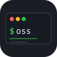

小さく鋭い CLI ツール集
WindowsmacOSLinux
毎日の開発に効く、ひとつのことだけをきれいにこなす小さな CLI 群。 どれも同じかたち — 純関数のコア、薄い CLI、ほぼ依存なし。 Windows / macOS / Linux で同じように動きます。
ひとつの仕事をきちんと。寄せ集めのフラグも、設定ファイルも、驚きもなし。
Windows を後回しにしない。どの OS でも同じ挙動を最初から狙います。
ロジックは純関数のコアに、CLI は薄い配線だけ。テストしやすく、読みやすい。
typer ＋ 標準ライブラリ。コンパイル不要、重いインストールもなし。
ネットワークなし、アカウントなし、テレメトリなし。データは手元のマシンに留まります。
pytest でテストファーストに開発。各ツールが数十のテストを通して出荷されます。
$ rcmd — 個人コマンド知識ベースシェル履歴から「残す価値のあるコマンド」をキュレーション。{{プレースホルダー}} 置換・タグ・全文検索で素早く呼び出し、そのまま実行。ローカル TOML 一枚、依存 1 つ。
uv tool install "git+https://github.com/ymatsuza/rcmd.git"$ rcopy — 除外付きクロスプラットフォーム copygitignore 風の --exclude / --include が全 OS で同じに効く再帰コピー。--dry-run で実行前プレビュー。Windows の Copy-Item -Recurse -Exclude 破綻・robocopy・rsync の隙間を埋めます。
uv tool install "git+https://github.com/ymatsuza/rcopy.git"ツールは順次ふやしていきます。
# プレースホルダー付きで保存 rcmd save "docker run --rm -it -v {{path}}:/work {{image}} bash" -d "作業ディレクトリをマウント" -t docker # 履歴から fzf で選んで保存 / 検索して呼び出し rcmd history --unique --reverse | fzf | rcmd save -d "説明" -t imported rcmd get k3f9 --set path=. --set image=alpine
# gitignore 風の除外。まず --dry-run で確認 rcopy ./project ./backup -e node_modules -e "*.log" -e "build/" --dry-run # .gitignore をそのまま使う / 既存を上書きしない rcopy ./project ./backup --exclude-from .gitignore --no-clobber
typer のみ各ツールは個別リポジトリで配布。必要なものだけ入れられます。
Small, sharp CLI tools
WindowsmacOSLinux
A growing set of focused command-line tools for everyday dev work — each one does a single thing and gets out of your way. Same shape every time: a pure-function core, a thin CLI, almost no dependencies. They run the same on Windows, macOS, and Linux.
One job, done well. No grab-bag flags, no config files, no surprises.
Windows is a first-class target, not an afterthought. Same behaviour everywhere.
Logic lives in pure functions; the CLI is a thin wrapper. Easy to test, easy to read.
typer plus the standard library. Nothing compiled, nothing heavy to install.
No network, no accounts, no telemetry. Your data stays on your machine.
Built test-first with pytest. Each tool ships with dozens of passing tests.
$ rcmd — personal command knowledge baseCurate the commands worth keeping from your shell history. Recall them with {{placeholder}} substitution, tags, and full-text search — or run them directly. Single local TOML file, one dependency.
uv tool install "git+https://github.com/ymatsuza/rcmd.git"$ rcopy — cross-platform copy with excludesRecursive copy with gitignore-style --exclude / --include that work the same on every OS, plus a --dry-run preview. Fills the gaps in Windows Copy-Item -Recurse -Exclude, robocopy, and rsync.
uv tool install "git+https://github.com/ymatsuza/rcopy.git"More tools coming.
# Save with placeholders rcmd save "docker run --rm -it -v {{path}}:/work {{image}} bash" -d "mount cwd" -t docker # Import from history via fzf / recall with values rcmd history --unique --reverse | fzf | rcmd save -d "desc" -t imported rcmd get k3f9 --set path=. --set image=alpine
# gitignore-style excludes; preview with --dry-run first rcopy ./project ./backup -e node_modules -e "*.log" -e "build/" --dry-run # Reuse your .gitignore / never overwrite existing files rcopy ./project ./backup --exclude-from .gitignore --no-clobber
typer is the only dependencyEach tool ships in its own repo — install only what you need.
oss-tools is a set of free, open-source tools built in personal time. Sponsorships are greatly appreciated.